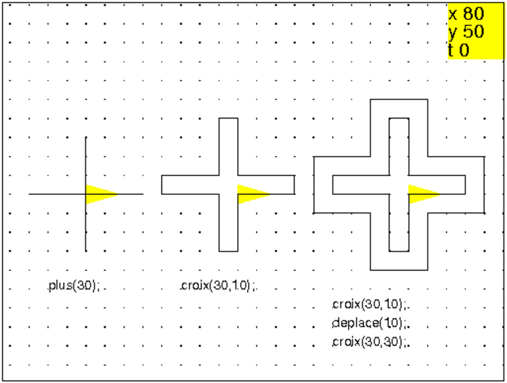
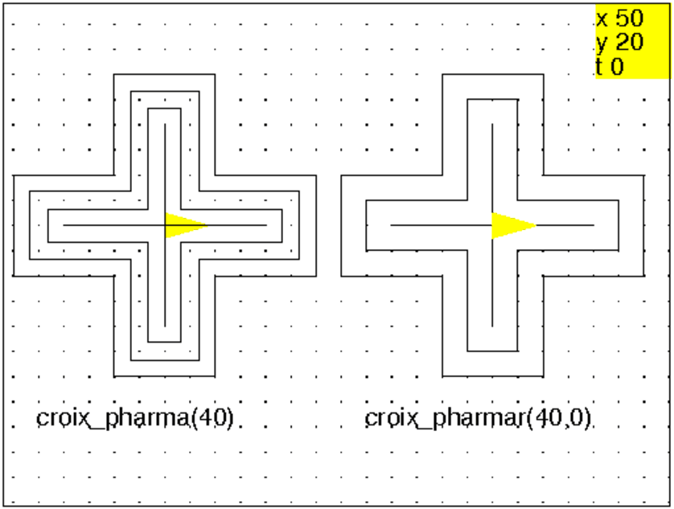
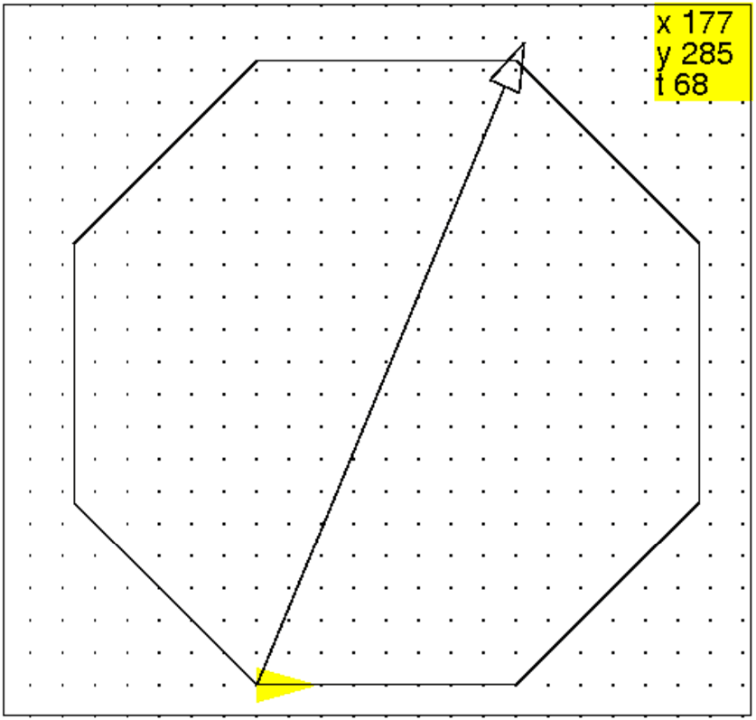
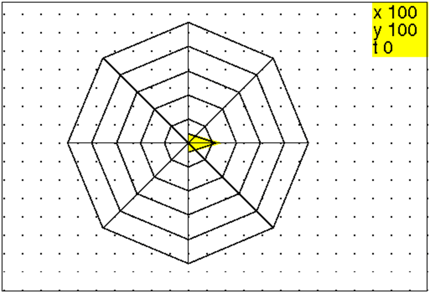
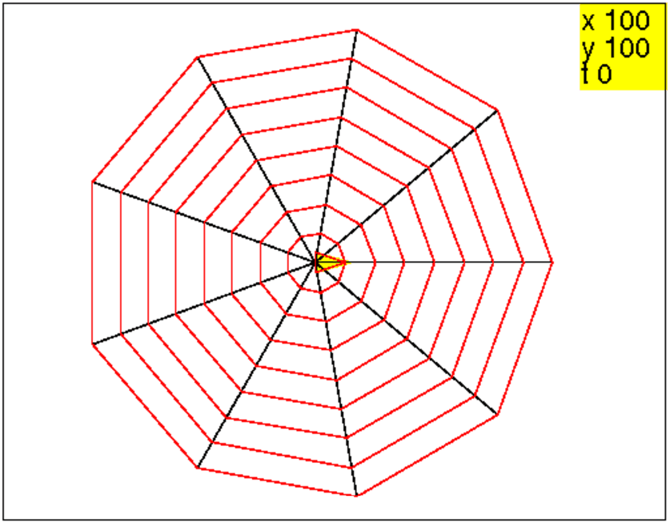
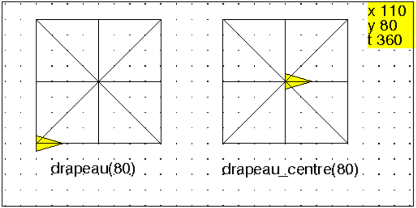
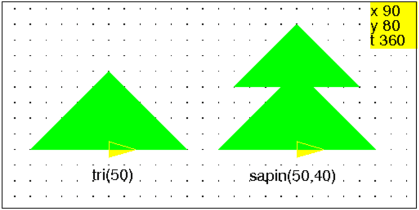
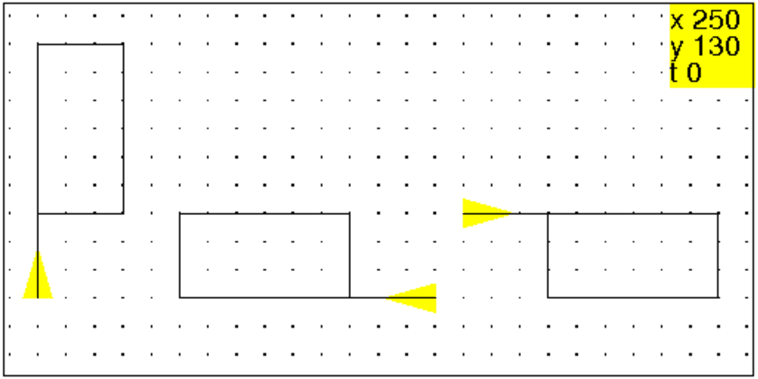

Travail sur le repérage dans le plan et les coordonnées et sur la notion
d’echelle.
Chaque élève est responsable du tracé de son bureau.
Le professeur étant chargé de tracer son bureau et de déterminer
par exemple l’empacement des fenêtres.
Faire le tracé d’une croix ayant la forme d’un plus.
Faire le tracé du contour externe d’une croix de pharmacie (les branches
externes de la croix sont des carrés).

Faire le tracé de 4 croix emboitées à l’image des croix de pharmacie.
-Analyse d’un dessin en le décomposant en éléments pertinents.
-Essayer d’avoir une écriture consise.
-Première approche de la notion de paramètres.
-Première approche de la notion de boucle pour.
plus(a):={
repete(4,avance(a),recule(a),tourne_gauche);
}:;
croix(a,b):={
repete(4,avance(a),tourne_gauche,avance(b),tourne_gauche,avance(a),tourne_droite);
}:;
deplace(b):={
saute(b);pas_de_cote(-b);
}:;
Puis, on veut de plus que la position d’arrivée de la tortue soit la même que celle de départ, on tape :
plus(60); deplace(10); croix(60,20); deplace(10); croix(60,40); deplace(10); croix(60,60); deplace(-30);
Puis on définit :
croix_pharma(a):={
plus(a);
deplace(a/6);
croix(a,a/3);
deplace(a/6);
croix(a,2*a/3);
deplace(a/6);
croix(a,a);
deplace(-a/2);
}:;
On remarque que plus(a) fait le même dessin que croix(a,0), l’écriture de la procédure plus est donc inutile. On veut de plus que la position d’arrivée de la tortue soit la même que celle de départ et on veut utiliser une boucle pour, on tape :
croix_pharmacie(a):={
pour n de 0 jusque 3 faire croix(a,n*a/3);deplace(a/6);fpour;
deplace(-2*a/3);
}:;
On peut aussi écrire une procédure récursive, mais on a alors besion de 2
paramètres a,b : cette procédure ne dessine rien si a<b
et dessine les croix emboitées avec 10 pas d’écart jusqu’à obtenir la
croix(a,a).
On tape :
croix_pharmar(a,b):={
si b<=a alors
croix(a,b);
deplace(10);
croix_pharmar(a,b+20);
deplace(-10);
fsi;
}:;
puis on tape :
croix_pharma(40);saute 130;
croix_pharmar(40,0);
On obtient :

Faire le tracé d’un triangle équilatèral, d’un carré, d’un hexagone,
d’un octogone puis, d’un pentagone et d’un polygone régulier ayant
n cotés.
Écrire la procédure des triangles équilatèraux de cotés de longueur
a puis, celle des carrés de cotés de longueur a etc...
Écrire la procédure des polygones réguliers ayant n cotés de longueur
a.
Le triangle équilatèral :
triequi(a):={
repete(3,avance(a),tourne_gauche(120));
}
Le carré :
ca(a):={
repete(4,avance(a),tourne_gauche);
}
L’hexagone :
hexa(a):={
repete(6,avance(a),tourne_gauche(60));
}
L’octogone :
octo(a):={
repete(8,avance(a),tourne_gauche(45));
}
Le polygone régulier à n cotés :
polyg(a,n):={
repete(n,avance(a),tourne_gauche(360/n));
}:;
L’activité consiste à tracer des polygones réguliers emboités et de dessiner aussi les segments joignant le centre aux sommets du polygone extérieur. Cela met en évidence le centre du polygone. Mais sans notion de trigonométrie c’est difficile. On peut faire faire une toile d’araignée hexagonale ou aussi faire cherher par tatonement la longueur de la diagonale d’un polygône régulier ayant un nombre pair de côtés
On commence par écrire une procédure qui trace un hexagone de côté
l lorsque la tortue part du centre et est dirigée vers un sommet et
revient à son point de départ.
On tape :
hexag_centre(l):={
avance l;
tourne_gauche 120;
repete(6,avance l,tourne_gauche 60);
tourne_droite 120;
recule l;
}:;
On dessine les diagonales de l’hexagone centré facilement, on tape :
diag_hexagc(l):={
repete(6,avance l,recule l,tourne_gauche 60);
}:;
Pour faire la toile il faut faire des hexagones emboités avec un pas de
p. On dessine les hexagones de côtés p, 2p,3p... et on donne le
nombre n d’hexagones. La tortue part du centre de la toile, est dirigée
selon un sommet de la toile et revient à son point de départ.
On tape :
araign6(p,n):={
diag_hexagc(n*p);
pour j de 1 jusque n faire
hexag_centre(j*p);
fpour;
}:;
On peut remarquer qu’il n’est pas astucieux de faire revenir la tortue au
centre lorsqu’on a fait un hexagone et que ce serait mieux de passer au suivant
directement. On écrit alors la procédure hexag qui dessine un
hexagone direct de côté l lorsque la tortue part d’un sommet et est
dirigée selon un côté.
On tape :
hexag(l):={
repete(6,avance l,tourne_gauche 60);
}:;
La toile est obtenue en tapant (la tortue part du centre et revient au centre) : On tape :
toile6(p,n):={
diag_hexagc(n*p);
pour j de 1 jusque n faire
avance p;
tourne_gauche 120;
hexag(j*p);
tourne_droite 120;
fpour;
recule n*p;
}:;
On tape ;
efface ;araign6(10,7);
Ou on tape :
efface ;toile6(10,7);
On obtient :

On essaye par essai et erreur de trouver la longueur de la diagonale d’un
octogone.
On tape :
octog(l):={
repete(8,avance l,tourne_gauche 45);
}:;
Puis, on tape :
efface ; crayon jaune; dessine_tortue; crayon noir; octog(80); tourne_gauche 135/2; avance 200;
On obtient :

Puis on fait des essais et on estime que la dagonale vaut d’un octogone de
côté 80 vaut 209.
On remplit le tableau suivant en faisantt calculer par Xcas la dernière
ligne avec Digits:=4 :
| cote | 40 | 50 | 60 | 70 | 80 | 90 | 100 |
| diagonale | |||||||
| diagonale/cote |
On obtient par exemple :
| cote | 40 | 50 | 60 | 70 | 80 | 90 | 100 |
| diagonale | 104.5 | 130.5 | 157. | 183. | 209. | 235. | 261. |
| diagonale/cote | 2.612 | 2.61 | 2.617 | 2.614 | 2.612 | 2.611 | 2.61 |
On en déduit que :
diagonale*cote≃ 2.61.
toile8(p,n):={
repete(8,avance n*p*2.61/2,recule n*p*2.61/2,tourne_gauche 45);
pour j de 1 jusque n faire
avance p*2.61/2;
tourne_gauche 135/2+45;
octog(j*p);
tourne_droite 135/2+45;
fpour;
recule n*p*2.61/2;
}:;
Puis, on tape :
efface ; crayon jaune; dessine_tortue; crayon noir; toile8(10,5);
On obtient : 
On écrit une procédure qui trace un polygone régulier direct de k
côtés de longueur l lorsque la tortue part d’un sommet et est
dirigée vers un sommet et revient à son point de départ.
On tape :
polyg(l,k):={
repete(k,avance l,tourne_gauche 360/k);
}:;
La procédure araignee(k,p,n) trace n polygones emboités, réguliers, directs et de k côtés où le plus petit polygone P a des côtés de longueur p. La distance du centre de P a un de ces sommets donne l’espacement entre les différents polygones. La tortue part du centre et est dirigée vers un sommet et revient à son point de départ. On tape dans l’èditeur de programme : On tape :
araignee(k,p,n):={
local r,j;
r:=p/sin(pi/k)/2;
repete(k,avance n*r,recule n*r,tourne_gauche 360/k);
pour j de 1 jusque n faire
saute r;
tourne_gauche 90+180/k;
crayon rouge;
polyg(j*p,k);
tourne_droite 90+180/k;
fpour;
saute -n*r;
}:;
Puis, on tape :
efface ; crayon jaune; dessine_tortue; crayon noir; araignee(9,10,8);
On obtient :

On peut écrire une procédure récursive :
araigneer(k,p,n):={
local r;
r:=p/sin(pi/k)/2;
crayon noir;
repete(k,avance n*r,recule n*r,tourne_gauche 360/k);
si n>0 alors
saute n*r;
tourne_gauche 90+180/k;
crayon rouge;
polyg(n*p,k);
tourne_droite 90+180/k;
saute -n*r;
araigneer(k,p,n-1)
fsi;}
:;
L’activité consiste à tracer un carré avec ses diagonales et ses
médianes.
Au début, les dimensions du carré ne sont pas imposées.
On fait ensuite varier le coté du carré.
Cette activité est double :
-travail sur les valeurs approchées (quelle est la longueur de la diagonale
d’un carré ?),
-travail sur les procédures paramétrées.
On choisit de faire partir la tortue en bas et à gauche du drapeau, on tape :
drapeau(a):={
repete(4,avance(a),tourne_gauche);
leve_crayon;
avance(a/2);tourne_gauche;avance(a/2);
baisse_crayon;
repete(4,avance(a/2),saute(-a/2),tourne_gauche);
tourne_gauche(45);
repete(4,avance(a*sqrt(2)/2),saute(-a*sqrt(2)/2),tourne_gauche);
tourne_droite(45);
leve_crayon;
recule(a/2);tourne_droite;recule(a/2);
baisse_crayon;
}:;
Ou encore, on choisit de faire partir la tortue au centre du drapeau, on tape :
carre_diag(a):={
repete(4,avance(a),tourne_gauche);
tourne_gauche(45);
avance(a*sqrt(2));
saute(-a*sqrt(2));
tourne_droite(45);
}:;
drapeau_centre(a):={
repete(4,carre_diag(a/2),tourne_gauche);
}:;
On tape :
drapeau(80);saute 160;
pas_de_cote 40;
drapeau_centre(80);
On obtient :

ou encore
triang(a):={
repete(2,avance(a),tourne_gauche);
avance(a);
saute(-a);
tourne_gauche(45);
avance(a*sqrt(2));
tourne_gauche(135);
}:;
drapeaut(a):={
repete(4,triang(a/2),tourne_gauche);
}:;
1-ière séance
On dessine un triangle rectangle isocèle plein et direct ABC avec comme
position de départ et d’arrivée de la tortue, le milieu de l’hypoténuse
BC avec un cap dirigé selon le vecteur BC.
tri(a):={
triangle_plein(a,a);
tourne_droite;
triangle_plein(a,a);
tourne_gauche;
}:;
On dessine un sapin formé de 2 triangles tri de dimensions 50 et 40 pas de tortue et décalés de 40 pas de tortue, avec comme position de départ et d’arrivée de la tortue le milieu de l’hypoténuse avex un cap dirigé selon la hauteur de tri(50).

Pour faire le dessin dans l’écran de géométrie :
//dessin du triangle qui represente la tortue
tortue_g(a):={
[triangle_rectangle(a,a+0.1,2),triangle_rectangle(a,a+0.2*i,0.5)];
}
//dessin du triangle rectangle isocele d'hypothenuse 2a
tri_g(a,l):={
[triangle_rectangle(a,a+l,1),triangle_rectangle(a,a+i*l,1)];
}
sapin_g(a,l1,l2):={
[triangle_rectangle(a,a+l1,1),triangle_rectangle(a,a+i*l1,1),triangle_rectangle(a+i*l2,a+i*l2+l2,1),triangle_rectangle(a+i*l2,a+2*i*l2,1)];
}
puis
tortue_g(-3); tri_g(-3,1); legende(-3.5-0.5*(i),"tri(50)"); tortue_g(0); sapin_g(0,0.8,1); legende(-0.5-0.5*(i),"sapin(50,40)");
Revenons à la tortue, on écrit la procédure sapin :
sapin():={
tri(50);
avance(40);
tri(40);
recule(40);
}:;
2-ième séance
On demande d’écrire à partir de sapin une procédure paramétrée avec
2 paramètres a et b : a pour 50 et b pour
40.
On écrit en classe en expliquant :
sapin(a,b):={
tri(a);
avance(b);
tri(b);
recule(b);
}
On a donc fait dessiner la dernière fois sapin(50,40).
On demande maintenant de dessiner les sapins de la famille du
sapin(50,40),
c’est à dire ceux qui ont la même forme
que lui à un agrandissement ou à une réducion près.
On demande aux enfants de remplir le tableau suivant :
| a | b |
| 5 | |
| 10 | |
| 15 | |
| 20 | |
| 25 | |
| 30 | |
| 35 | |
| 40 | |
| 45 | |
| 50 | 40 |
| 55 | |
| 60 | |
| 70 | |
| 80 | |
| 90 | |
| 100 |
Les enfants remplissent tous le tableau au début en se servant
systématiquement de l’addition ils écrivent :
| a | b |
| 15 | 5 |
| 20 | 10 |
| 25 | 15 |
| 30 | 20 |
| 35 | 25 |
| 40 | 30 |
| 45 | 35 |
| 50 | 40 |
Mais lorsqu’il testent sapin(20,10) ils n’obtiennent qu’un seul triangle
et s’apercoivent que’il y a une erreur....et ils sont alors obligés de
procéder par essais et erreurs ...mais cela est quelquefois difficile car il
n’y a guére de différence entre sapin(45,35) et sapin(45,36).
Il faut donc demander :
si a=100 que vaut b ?
si a=25 que vaut b ?
si a=5 que vaut b ?
si a=10 que vaut b ?
si a=20 que vaut b ?
Comment écrire cette famille avec un seul paramètre ?
On veut arriver à l’écriture de la procédure :
famille_sapin(k):={
sapin(5*k,4*k);
}
Ainsi le sapin(50,40) est le même que famille_sapin(10).
Activité réalisée dans une classe de CM2.
Les élèves viennent de faire des travaux pratiques de physique sur la réflexion de la lumière : fabrication de périscope, boite noire et image réfléchie par un miroir.
Ils ont observé comment un dessin tracé sur une feuille de papier se
réfléchit dans un miroir, lorsqu’on pose ce miroir perpendiculairement à
cette feuille.
Les symétriques de dessins faits sur un tableau noir muni d’un quadrillage
sont réalisés aisément lorsque la droite symbolisant le miroir est
une horizontale ou une verticale ou encore est inclinée de 45 ou de 135
degrés en passant par des nœud du quadrillage, mais le quadrillage est
source d’erreur quand le symétrique d’un nœud n’est pas un nœud.
Je dessine au tableau les dessins suivants :
un drapeau, un képi, une casserole :

Il faut que les enfants fasse dessiner à la tortue :
Voici ce que font la plupart des enfants :
le tracé d’une droite D horizontale ou verticale puis le tracé d’un
drapeau et de son symétrique. Il donne un nom à cette suite d’instruction par exemple exercice. Puis pour répondre à la consigne :
le miroir doit avoir une position quelconque, il tape :
efface; tourne_droite(30);exercice
On demande de définir une fonction objet qui dessine un objet avec au
plus 5 traits. Puis on demande de refaire le même travail que lors de la
première séance en dessinant le symétrique de objet par rapport
à D mais la position de objet par rapport à la droite ne doit pas
être figée.
Il faut donc prévoir une fonction place_objet
qui place l’objet par rapport à la droite ainsi qu’une fonction
place_objetsym qui place l’objet symétrique par
rapport à la droite et une fonction objetsym qui dessine le
symétrique de objet.
axe(c):={
pas_de_cote(100);
tourne_gauche(c);
avance(200);
recule(400);
avance(200);
};
objet():={
avance 30;
repete(2,avance 60,tourne_droite,avance 30,tourne_droite);
recule 30;
};
objetsym():={
avance(30);
repete(2,avance(60),tourne_gauche,avance(30),tourne_gauche);
recule(30);
};
place_objet(a,b):={
leve_crayon;
tourne_gauche;
avance a;
tourne_gauche b;
baisse_crayon;
};
replace_tortue(a,b):={
leve_crayon;
tourne_droite b;
recule a;
tourne_droite;
baisse_crayon;
};
place_objetsym(a,b):={
leve_crayon;
tourne_droite;
avance a;
tourne_droite b;
baisse_crayon;
};
retoursym(a,b):={
leve_crayon;
tourne_gauche b;
recule a;
tourne_gauche;
baisse_crayon;
};
exo(a,b,c):={
efface;
axe(c);
place_objet(a,b);
objet();
replace_tortue(a,b);
place_objetsym(a,b);
objetsym();
retoursym(a,b);
tourne_droite c;
pas_de_cote(-100);
};
Puis on tape : exo(30,40,20)
Voici la feuille d’un TP suivi d’une correction possible où l’on a utilisé pas_de_cote.
Voici les dessins d’un drapeau, d’un képi, d’une casserole :

1/ Écrire une procédure objet qui réalise l’un de ces dessins : on
prendra soin de noter sur le dessin la position choisie pour
le départ et l’arrivée de la tortue.
2/ On veut dessiner l’image de objet dans un miroir, pour cela :
1/ Refaire l’exercice précédent en écrivant les procédures suivantes :
2/ Comment peut-on écrire de façon automatique la procédure
objetsym à partir de la procédure objet ?
Comment peut-on écrire de façon automatique la procédure
place_objetsym à partir de la procédure place_objet ?
Une solution pour l’exercice I peut être :
objet(a):={
avance(a);
repete(2,avance(2*a),tourne_droite,avance(a),tourne_droite);
recule(a);
};
objetsym(a):={
avance(a);
repete(2,avance(2*a),tourne_gauche,avance(a),tourne_gauche);
recule(a);
};
exo1():={
pas_de_cote(200);
objet(40);
pas_de_cote(-100);
tourne_droite(20);
avance(200);
recule(400);
avance(200);
tourne_droite(110);
saute(100);
tourne_gauche;
objetsym(40);
}
Les procédures de l’exercice II :
miroir():={
avance(200);
recule(400);
avance(200);
};
place_miroir(d):={
pas_de_cote(100);
tourne_gauche(d);
miroir();
}
Le paramètre d représente l’angle du miroir avec l’horizontale.
Le paramètre b représente la distance du départ de l’objet avec le
miroir et le paramètre c représente son inclinaison par rapport au
miroir.
place_objet(b,c):={
pas_de_cote(-b);
tourne_gauche(c);
};
replace_tortue(b,c):={
tourne_droite(c);
pas_de_cote(b);
};
place_objetsym(b,c):={
pas_de_cote(b);
tourne_droite(c);
}
On remarque que la procédure place_objetsym est inutile puisque :
place_objetsym(b,c)=place_objet(-b,-c).
À la fin pour remettre la tortue sur le miroir on utilisera
replace_tortue(-b,-c)
On peut aussi écrire la procédure objet2 qui réalise
objet (resp objetsym) quand la valeur du deuxième paramètre
est 1 (resp -1).
objet2(a,s):={
avance(a);
repete(2,avance(2*a),tourne_droite s*90,avance(a),
tourne_droite s*90);
recule(a);
}
et alors objet(a):=objet2(a,1) et objetsym(a):=objet2(a,-1)
On écrit alors :
exo2(a,b,c,d):={
place_miroir(d);
miroir();
place_objet(b,c);
objet(a);
replace_tortue(b,c);
place_objetsym(b,c)
objetsym(a);
replace_tortue(-b,-c);
}
ou encore, si on suppose que le miroir est dessiné et que la tortue est sur le miroir, on peut utiliser la procédure suivante :
finexo2(a,b,c):={
place_objet(b,c);
objet2(a,1);
replace_tortue(b,c);
place_objet(-b,-c)
objet2(a,-1);
replace_tortue(-b,-c);
};
exo2(a,b,c,d):={
place_miroir(d);
miroir();
finexo2(a,b,c);
}
On tape par exemple :
exo2(40,100,20,-10)
finexo2(-20,40,30)
finexo2(...)